Dr. app with full name is Doctor Application which enables you to find the best doctors and book instant appointments. You can read details about the doctor such as qualifications, consultation fees, see feedback from other patients and instantly book appointments right from your smartphone. So you have the widest range of options while choosing the most suitable doctor.
We are providing you app related source that are used to develope Doctor app. When you donwload source from codecanyon you will get following folders in zip file.
Doctor App 1.1.zip contains
Doctor App [Folder]
Document
Server Site
For running android source of Doctor app you required following tools.
for more instruction search how can install SDK to eclips. and follow the link
http://developer.android.com/sdk/installing/installing-adt.html
There are several easy step to import project into Eclips.
Step 1 : Open Eclips and select workspace and then click on Menu > File > New > Other
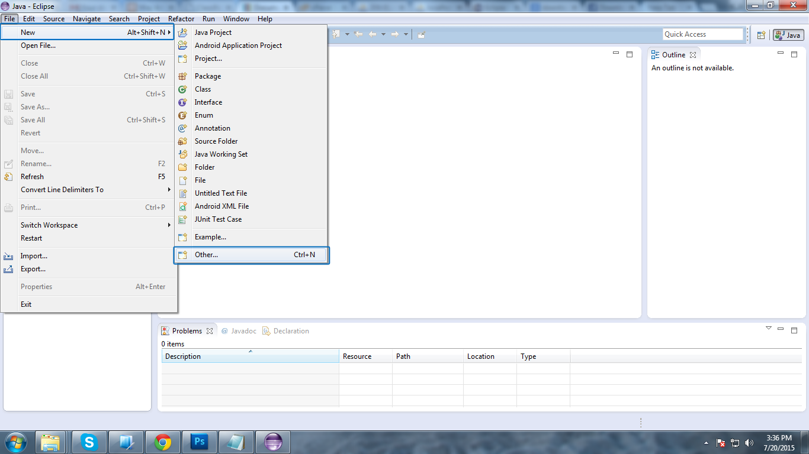
Step 2 : Select Android > Android project from existing code from opend dialog box.
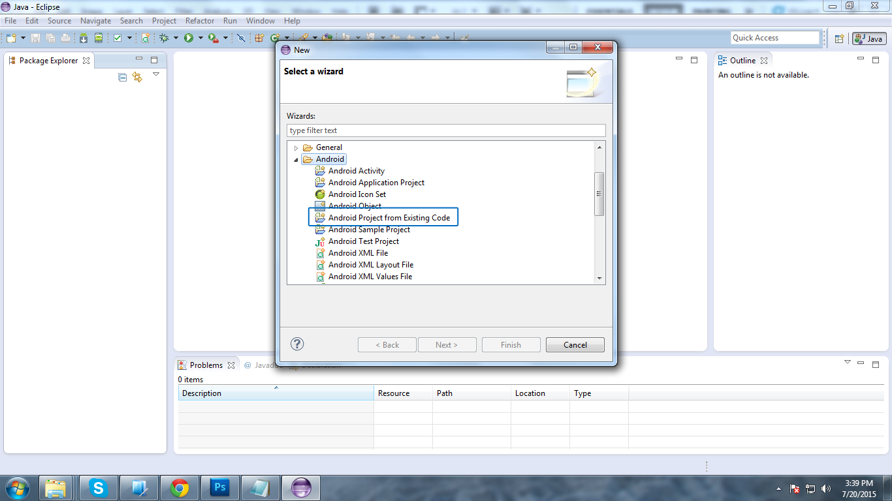
Step 3 : Select Project Foder from "Doctor App"
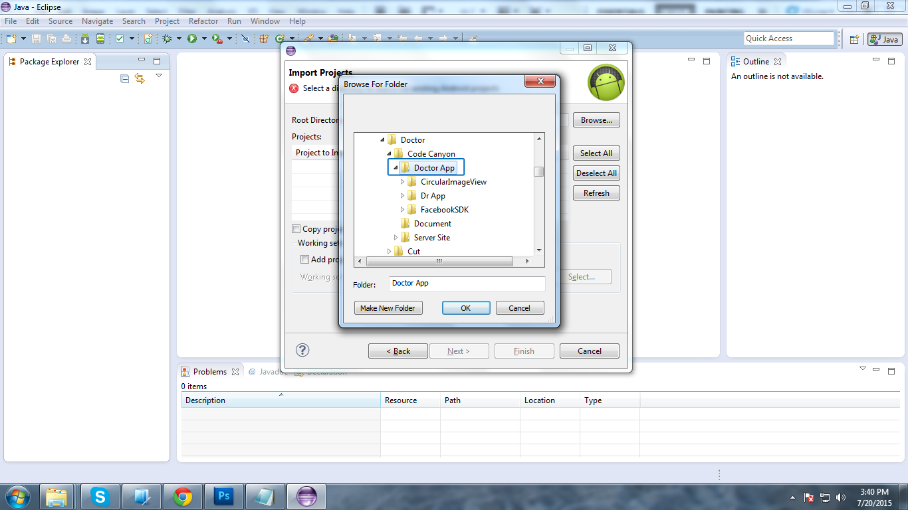
Step 4 : Select Check all Existing project in package and also checked "Copy project into workspace"
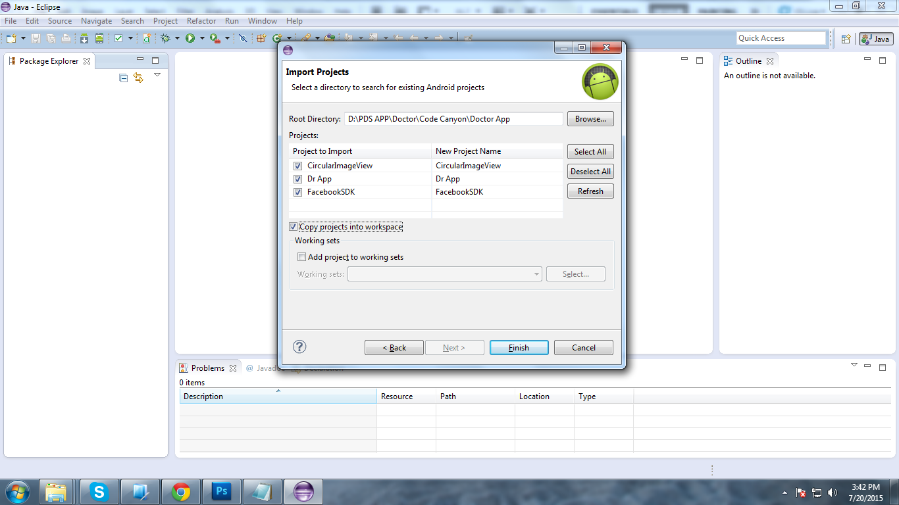
This will complete process of import after import complte you can see some errors with red simbol but do not worry about it.
It required some library that are listed bellow
Both are required librady you must import it.
Location of both librearies are :
If this libraries are not available at given path. then update Android SDK
Import Libreary as like do process above just choose given path.
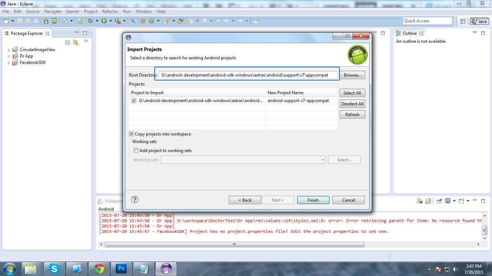
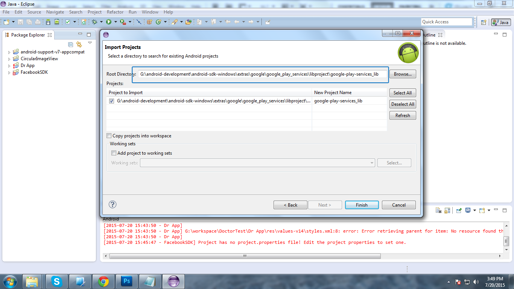
After import complete of library. now time to attached libreary to project...
Add "appcompact_v7" library to "Facebook SDK"
Right click on "FacebookSDK" select "Properties"
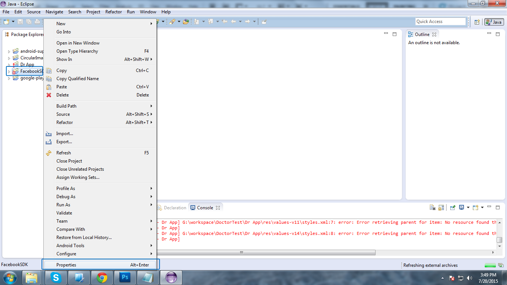
Choose "Android" and click on "ADD" in opend dialogue box and select library.
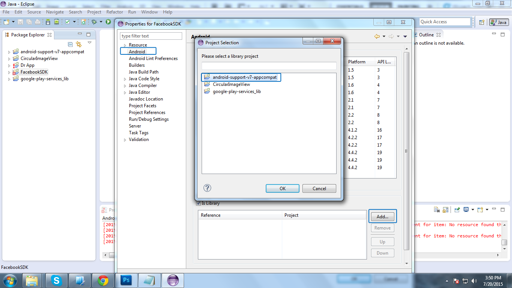
The same way Add Library to "Dr App". Right click on Dr App and select "Properties" and add all required libtraries listed in bellow image
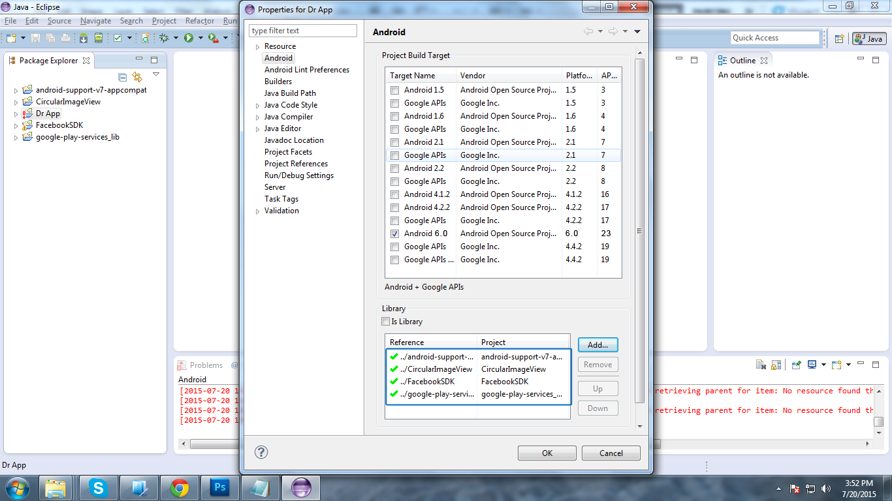
Now you got error free imported project.
After using app you need little configuration with it.
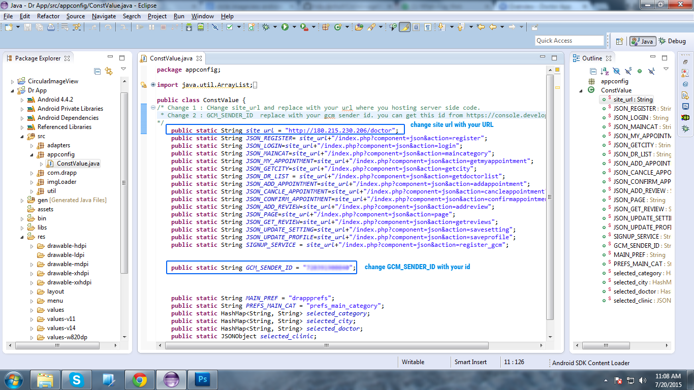
Edit file Dr App > src > appconfig > ConstValue.java
Change "site_url" with your URL
example : public static String site_url = "http://mywebsite.com"
Change "GCM_SENDER_ID" with your CGM Project ID
How you can get GCM_SENDER_ID instructions are given bellow.
Change default Keys and strings
Edit file : Dr App > res > values > strings.xml
change " google_geo_api_key " how to get this key instruction in given in next section.
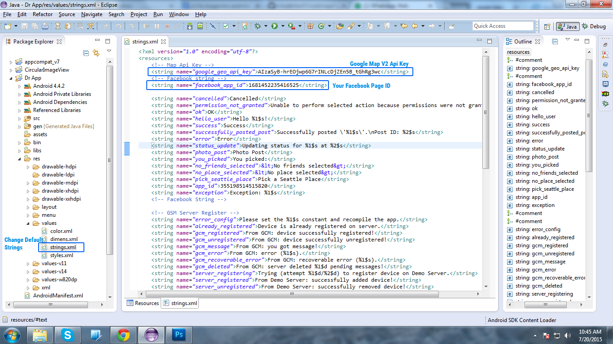
change "facebook_app_id" with your app id. to create this id
Step 1 : https://developers.facebook.com/apps create new app
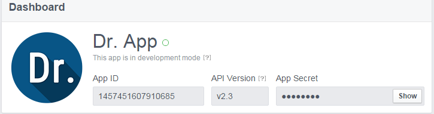
For sending pushnotification to all installed user you need to configure GCM with it.
Login you self at "https://console.developers.google.com/project"
After login to google API Console you need to create your own project .
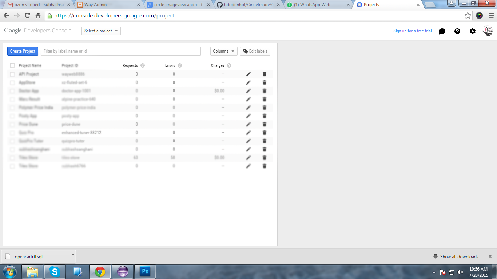
Select Project you have created.
After selection project Enalbe Following services. navigate to " Api & auth > API "
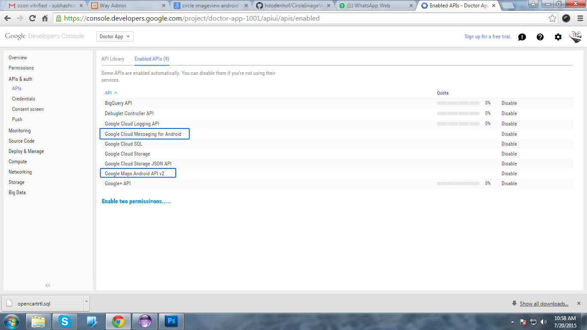
Create Credential for your project. Click on " Api & auth > Credentials "
- then "Create new Client ID" this will allow you to access map permission to your app.
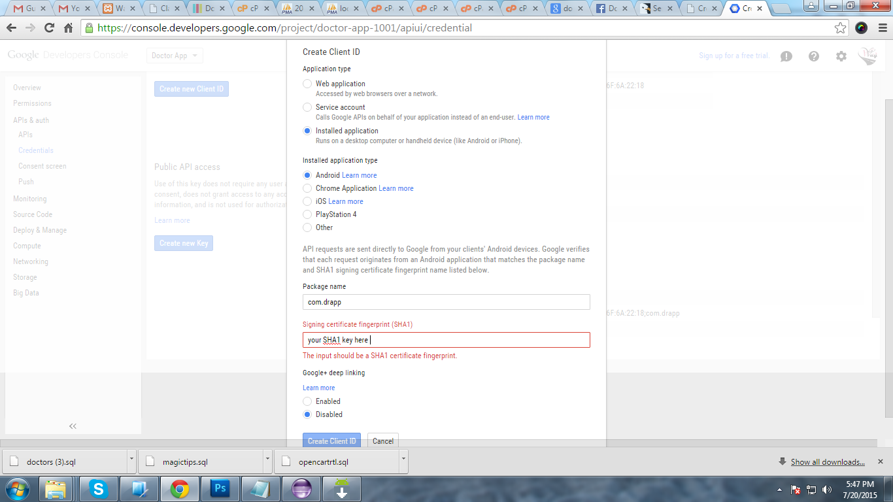
SHA1 key can be fine from here : https://developers.google.com/drive/android/auth
GCM SENDER ID
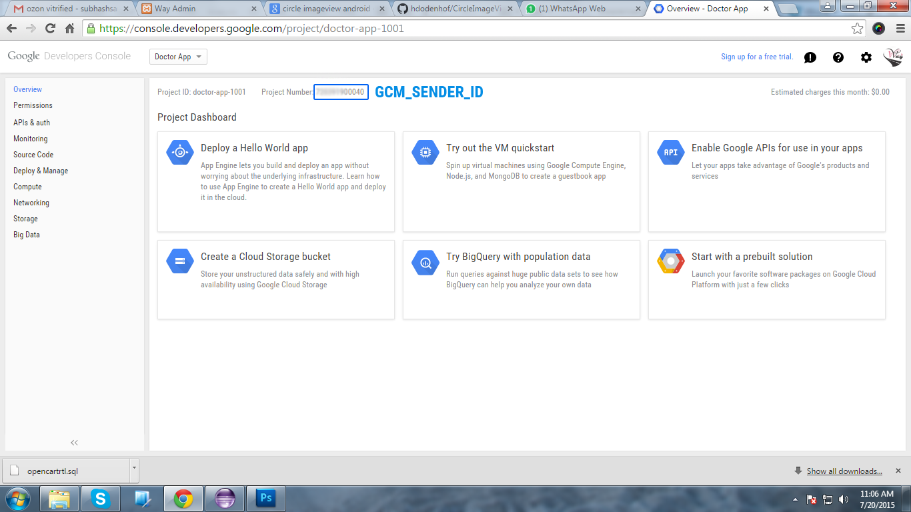
Other Required KEYS :
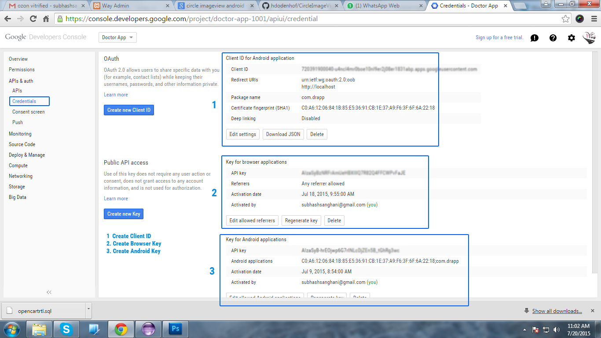
fore more instruction about how can configure GSM Cloud Messaging please read it :
http://www.androidhive.info/2012/10/android-push-notifications-using-google-cloud-messaging-gcm-php-and-mysql/
Upload source of "Server Site" folder to your server.
Step 1 :
For upload this source to your site you can use FTP details : login with your FTP and choose folder "Server Site" and upload it to your site
Step 2:
Create Database with your site. import given "doctor.sql" file into your database.
Step 3 :
Change database configuration with your site.
Edit file at "includes / global_declarations.php"
Two type of user login we are provided :
Admistrator can manage all doctors data and all things.
Doctor can manage his own data, profile, appointment and all.
Login with your url :
Administrator Login :
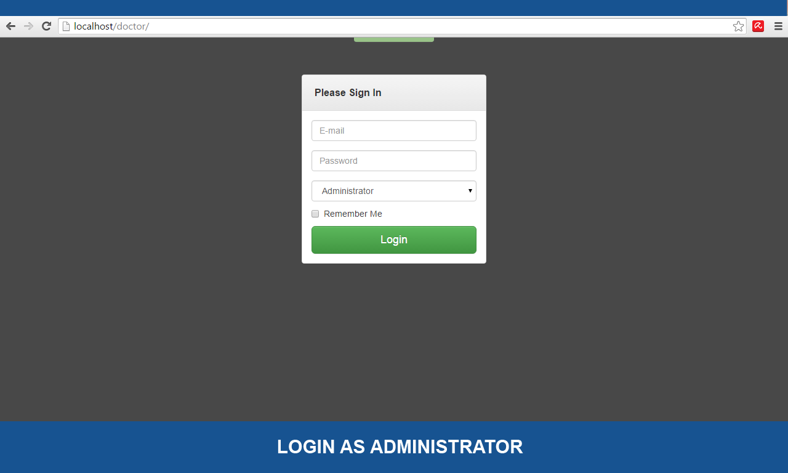
What Admin can do with it :
What Doctor can do with this admin :
I would like to say special thanks to all from where i get some code and special guidance to develope this application
https://developer.android.com
http://www.androidhive.info/
https://github.com/Pkmmte/CircularImageView
https://developers.facebook.com
First of all thanks to interest in my products. If any problem in inegration in application then user can contact use on following email and or live reaply through skype
email : subhashsanghani@gmail.com
skype : subhash.saghani